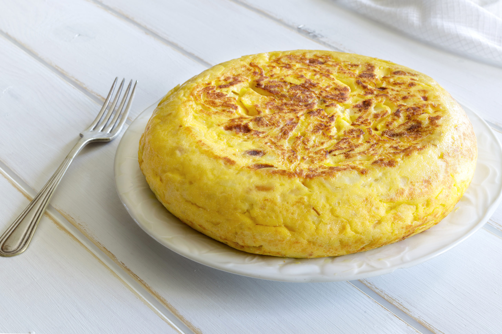

Ingredientes
- 4 patatas grandes
- 1 cebolla
- 5 huevos
- Aceite de oliva
- Sal al gusto
Instrucciones
- Pela y corta las patatas en rodajas finas.
- Pica la cebolla en trozos pequeños.
- Calienta una sartén con abundante aceite y fríe las patatas junto con la cebolla a fuego medio hasta que estén tiernas.
- Escurre el exceso de aceite y deja las patatas y la cebolla en un bol.
- En otro bol, bate los huevos con una pizca de sal y mezcla con las patatas y cebolla.
- Vierte la mezcla en una sartén con un poco de aceite y cocina a fuego lento hasta que esté dorada por ambos lados.
- Sírvela caliente o fría, según prefieras.

Tabla Nutricional
| Ingrediente |
Calorías |
| Patatas |
150 |
| Cebolla |
40 |
| Huevos |
90 |
| Aceite de oliva |
120 |
Suscríbete a nuestro boletín